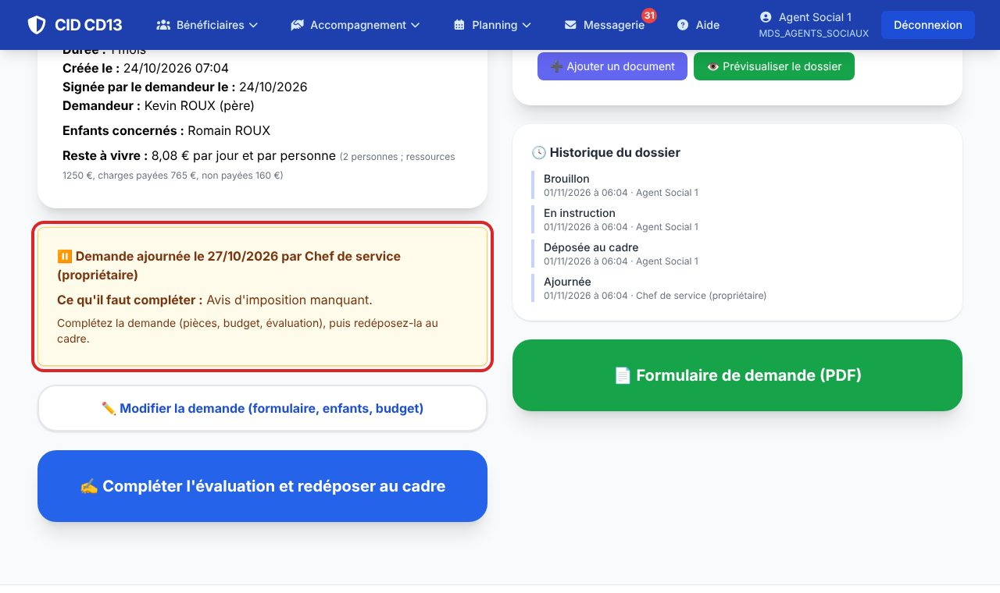
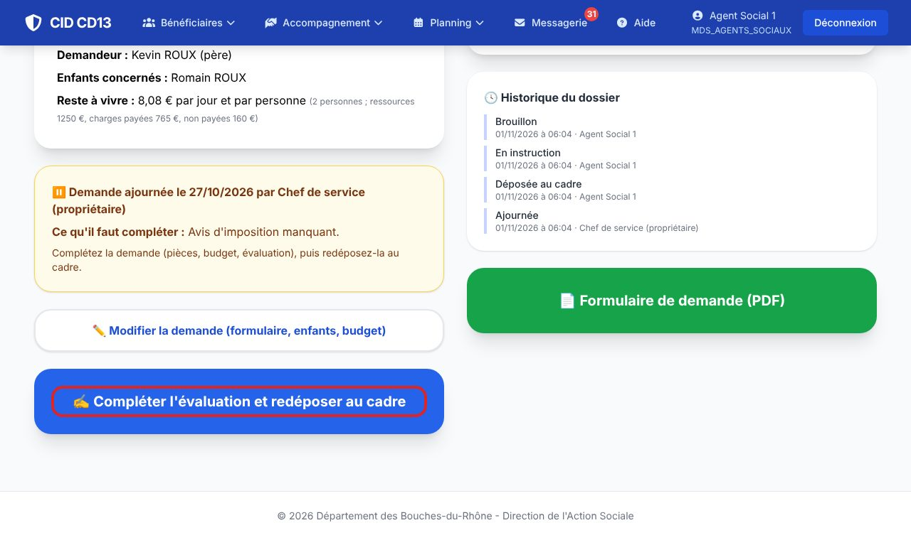
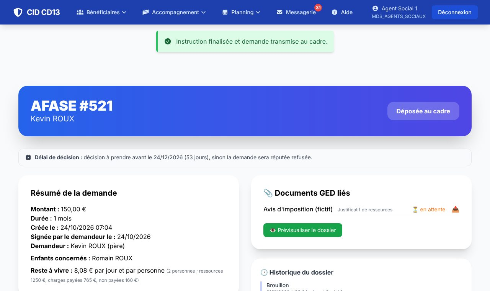

1Voir ce qui manque

- Vous recevez un message CID quand le cadre ajourne. Ouvrez la demande : un encadré orange indique qui a ajourné, quand, et ce qu'il faut compléter.
- En haut de la fiche, l'échéance des 15 jours est rappelée.
2Compléter et redéposer


- Ajoutez les pièces manquantes (Ajouter un document) ou corrigez la demande (Modifier la demande).
- Cliquez sur Compléter l'évaluation et redéposer au cadre, relisez, puis Finaliser et transmettre au Cadre.
- La demande repasse au statut Déposée au cadre : le délai de 15 jours s'arrête.
Bon à savoir
- CID vous envoie un rappel 10 jours après l'ajournement.
- Sans réponse au bout de 15 jours, le cadre est prévenu : la demande est à refuser pour absence de justificatifs.
- La demande est réputée refusée 2 mois après la date de signature du demandeur : les échéances s'affichent sur la fiche et sur le tableau du cadre, et CID envoie des rappels.
Et ensuite ?
Cliquez sur une image pour l'agrandir. Le cadre rouge montre où cliquer ou quoi remplir. Toutes les données affichées sont fictives.